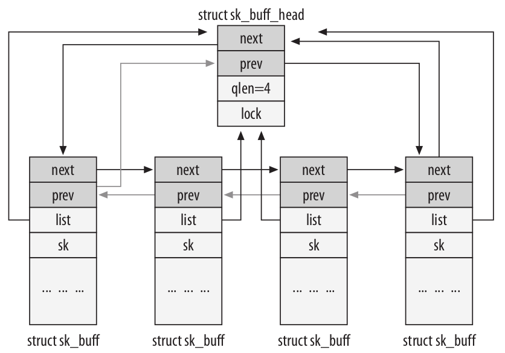

关键数据结构
Table of Contents
在阅读本系列的后续文章和研究内核网络代码时，会不时参考几个关键结构，自然对其中的各个域也要有一定的理解。
本文会介绍下面这些数据结构，并且会提及某些操作这些数据结构的函数和宏：
struct sk_buff
用于存放一个packet。该结构体会被所有网络层用到，存放头部信息，用户数据（负载payload）信息，以及其它需要协调工作的信息。
struct net_device
在内核中的网络设备都由这个结构体表示，它包含有硬件以及软件配置信息。后面的系列文章会介绍它的分配。
另外还有一个关键数据结构是struct sock，它用来存储套接字的网络信息，不过这不是本系列文章的重点。
1 套接字缓存：sk_buff结构体
这个结构体或许是Linux内核网络里最重要的数据结构了，表示了到达或要传输数据的的头部信息，定义在include/linux/skbuff.h文件里，这个结构体包含了大量的成员。
在内核开发的历史上，这个结构体改变了许多次，包括添加新的选项，重排已经存在的成员，这些域大致可以分为以下四类：
- 布局
- 通用
- 特定功能相关的
- 管理函数
这个结构体会被几个不同的网络层（包括MAC或者其它在第二层的链路层协议，L3层上的IP，L4层上的TCP或UDP）使用到，并且随着包从一层传到另一层，结构体中的各个域也会改变。在L4层把包传给L3层 之前, 会附加一个头部信息, 而L3层在传到L2层时, 也会附加它的头. 比起将数据从一层拷贝到另一层, 只附加头部信息, 效率就很高. 因为向一个buffer的头部处添加空间(通过操作指向这个buffer的变量)是一个比较复杂的操作, 内核提供skb_reserve函数来完成这个功能. 因此到每个协议层时, 要做的第一件事就是调用skb_reserve函数来为协议预留头部信息. 在后面的小节里我们会看到一个例子, 当缓存在层之间传递时, 内核是如何确保在缓存的头部预留足够多的空间.
当缓存(数据)在协议栈由底向上传递时, 底层(旧)的头部信息就不再需要了. 举例来说, L2层的头部信息, 仅由设备驱动层使用, L3层并不关心. 不过内核代码并不是直接从缓存(数据)中直接删除L2层的头部信息, 只是将指向payload的指针向前移动到L3的头部信息处, 这样消耗的CPU周期就比较少.
1.1 网络选项与内核结构体
配置内核或查看TCP/IP的spec时, 网络代码都会提供许多有用的选项但并不是必须的, 比如防火墙, 多 播以及其它的功能. 这些选项大多数都要求在内核的数据结构里增加更多的域. 因此在sk_buff里随处 可见C的预处理宏#ifdef. 比如在sk_buff结构体的底部, 可以看到这样的代码部分:
... #ifdef CONFIG_NET_SCHED __u32 tc_index; #ifdef CONFIG_NET_CLS_ACT __32 tc_verd; __u32 tc_classid; #endif #endif
这个例子就展示了只有在编译时定义了CONFIG_NET_SCHED符号时tc_index域才是sk_buff结构体的一部分. 这就是说, 系统管理员使用make config或者使用自动安装工具, 将Device Drivres->Networking support->Networking options->Qos and/or fair queueing选项打开了.
这个例子实际上展示了两个嵌套的选项, CONFIG_NET_CLS_ACT下的成员只有在QoS and/or fair queueing选项得到支持时才考虑加入到sk_buff结构体里来.
需要注意的是, QoS选项不能被编译成模块的形式. 因为使能这个选项后, 对于内核数据结构的影响通 常是不可逆的. 一般来说, 那些会造成内核数据结构有改变的选项都不适合编译成模块.
1.2 字段布局
sk_buff里有几个成员, 只是为了帮助搜索和组织数据结构本身, 内核在双向链表里维护sk_buff结构体. 但是这个链表的组织比传统的要复杂些.
像其它双链表一样, 通过next和prev域来连接这些sk_buff结构体. 而sb_buff有一个特殊的要求就是要能快速的找到整个链表的头. 为了达到这个目的, 一个sk_buff_head类型的成员放在了链表的开头. 其定义如下:
struct sk_buff_head { struct sk_buff *next; struct sk_buff *prev; __u32 qlen; spinlock_t lock; }
qlen代表列表中有多少个元素. lock用来防止同时访问列表, 后面还会介绍.
sk_buff和sk_buff_head的前两个元素是一样的: next和prev指针. 另外sk_buff还包括一个list域用来指向sk_buff_head. 如下的图:

Figure 1: sk_buff和sk_buff_head之间的关系
其它的一些域:
struct sock *sk
指向拥有这个sk_buff的套接字. 当数据在本地生成或被本地进程接收时, 就需要这个域. 因为数据本身和套接字相关的信息被L4层(TCP或UDP)以及用户程序所使用. 当这个buffer仅仅是转发(forward)时, 也就是源和目的地都不在本机, 这个指针就是NULL.
unsigned int len
在buffer中数据的大小. 这个长度包括被head所指的主buffer里的数据, 以及分段(fragments)中的 数据. 它的值会随着buffer在网络协议栈上移动而变化, 比如沿协议栈向上时, 头部就会被丢弃, 而沿协议栈向下时, 头部就会被添加上. 当然, len是算上了协议头部的. 关于这一点后面还会介绍.
- unsigned int data_len